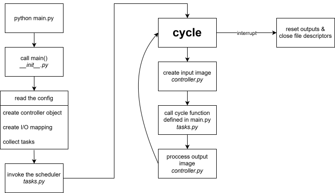

Internal Architecture¶
This page describes the maintainer-facing internal structure of the python-wagoplc library. If you want to learn how to use the library in an application, start with the User Guide.
Runtime architecture¶
What happens if you run python main.py at the command line? The following graphic illustrates the internal workflow.

At implementation level, the top-level __init__.py file contains the main() function. It is responsible for entering the library runtime, delegating configuration loading, constructing runtime objects, and starting the task execution cycle.
Configuration handling¶
The read_config module contains the configuration-loading path used by main(). It reads controller.yaml, interprets an optional Tasks instance from the script, and produces the unified runtime representation: variable mapping, Controller object, and Task instances. Invalid configuration is rejected during this stage, including schema validation of the tasks section via the schema library.
Task management¶
Task management happens inside the tasks module, which contains the Tasks, Task, and Scheduler classes. The scheduler currently focuses on cyclic tasks. It runs until an external interrupt occurs, after which PLC outputs are reset and open file descriptors are closed.
Standard library¶
python-wagoplc contains a standard library of IEC 61131-3 style function blocks in the fb module. During configuration loading, read_config resolves function block definitions either from this standard library or from a user-defined module path.
Controller-specific functionality¶
At the heart of python-wagoplc are the packages that define controller-specific functionality. Each controller series has its own package, each controller its own module and class, and base implementations provide the common interface for follow-up variants where appropriate. The CC100_v1 class and its subclasses are the main example of this structure.
Source layout¶
src/wagoplc/__init__.py: public entry points, includingmain().src/wagoplc/read_config.py: configuration parsing, validation, and runtime object assembly.src/wagoplc/tasks.py: task definitions, scheduler logic, and signal handling.src/wagoplc/controller.py: generic controller and I/O abstractions.src/wagoplc/fb.py: standard function block implementations.src/wagoplc/cc100/: controller-family-specific implementations.
When to use this page¶
Use this page when you are:
- extending the runtime or scheduler
- adding support for another controller variant
- debugging configuration assembly or task lifecycle issues
- tracing how public user-facing concepts map to internal modules
For contributor workflow, tests, and tooling, continue with the Development Guide.